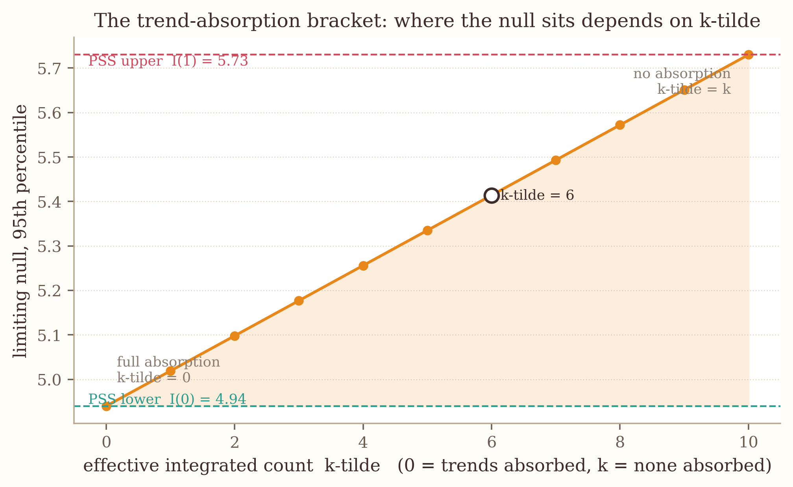
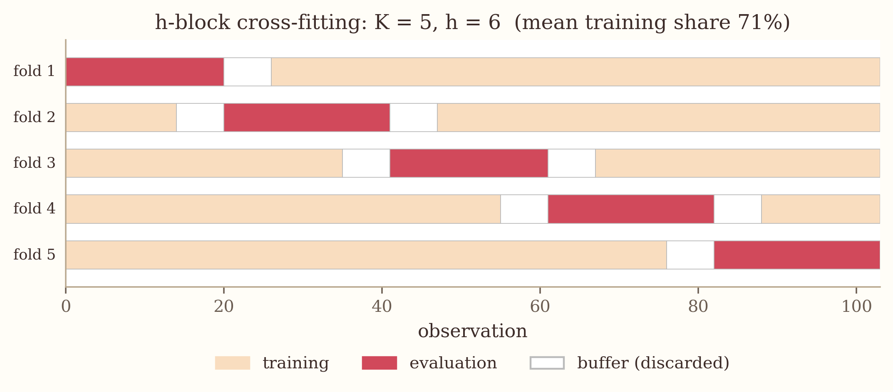
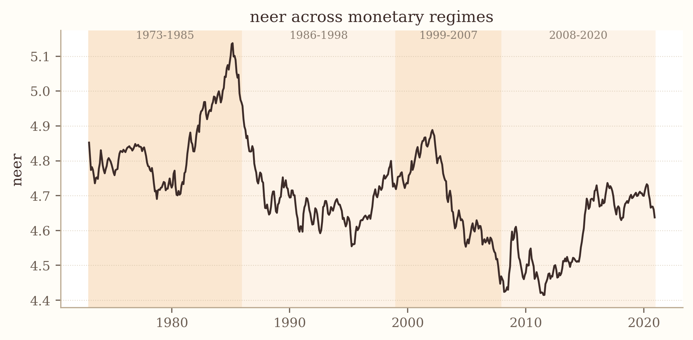
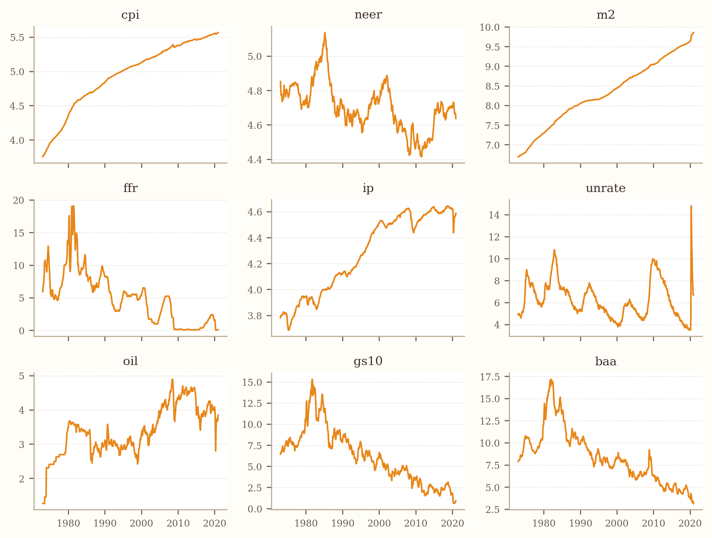
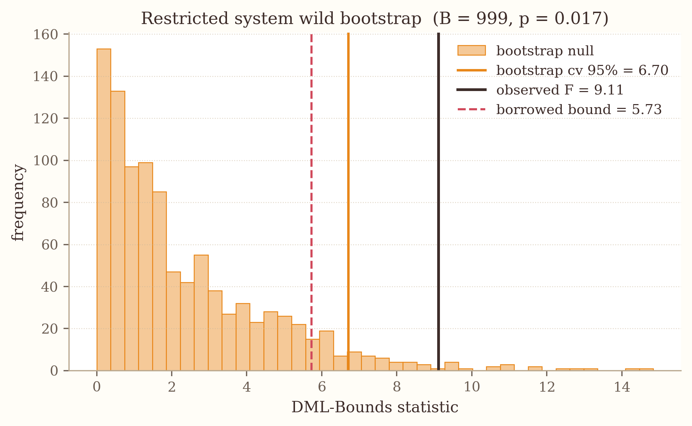
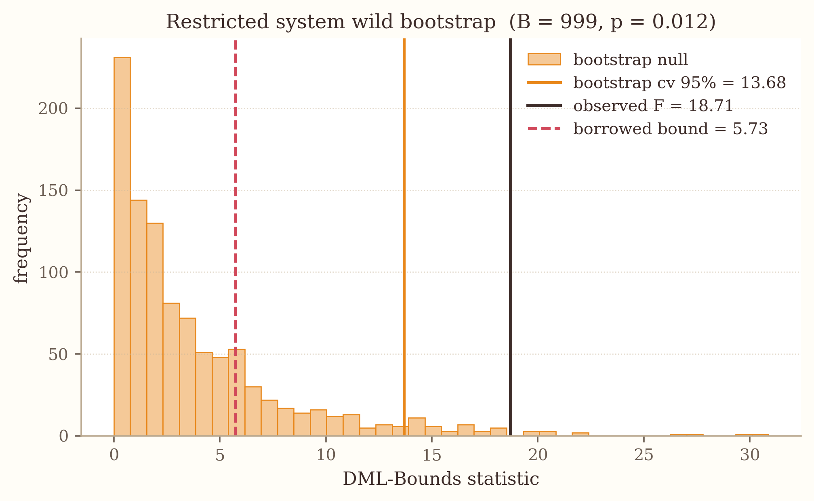
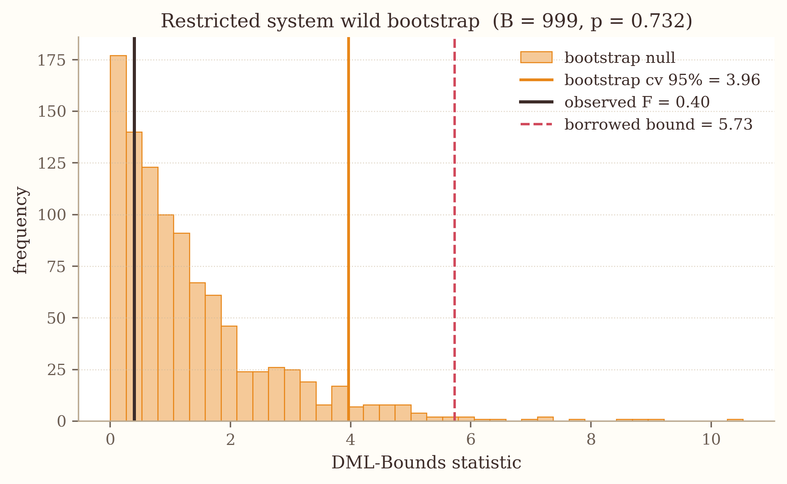
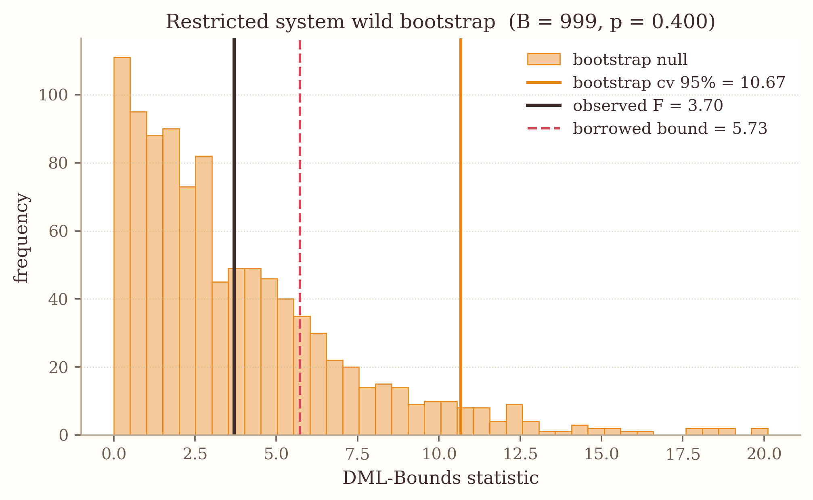
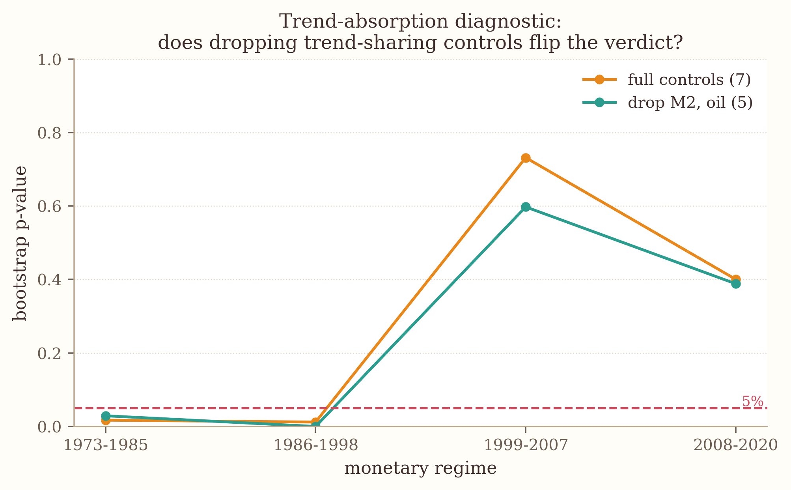
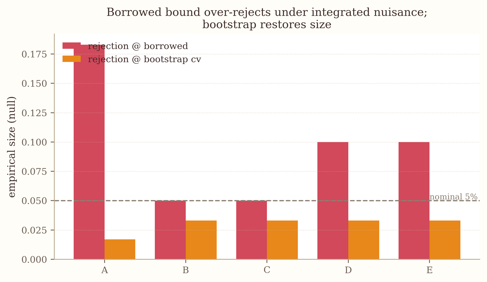

Python package · econometrics
ardldml.
ARDL bounds testing for cointegration when your conditioning set is high-dimensional — and may itself be carrying stochastic trends.


Python package · econometrics
ARDL bounds testing for cointegration when your conditioning set is high-dimensional — and may itself be carrying stochastic trends.
Install, load the bundled macroeconomic data, test, bootstrap. Nothing else is required — the dataset ships with the package.
# pip install ardldml
from ardldml import DMLBounds, load_passthrough, CONTROLS
df = load_passthrough(regime="1999-2007") # real monthly FRED-MD data
res = (
DMLBounds(df["cpi"], df["neer"], df[CONTROLS],
lags=4, n_blocks=5, buffer=6,
integrated=["m2", "ip", "oil", "gs10", "baa", "ffr"])
.fit()
.bootstrap(B=999, seed=20260625)
)
print(res.summary())FRED-MD, 1973–2020, bundled offline.
Each cites the paper passage it enforces.
Every critical value is generated.
Classical bounds testing brackets one unknown. With many persistent controls a second one appears, and it changes what the null distribution is.
Pesaran, Shin and Smith (2001) test for a long-run relationship inside a conditional error-correction model,
$$\Delta Y_t = a_0 + \rho Y_{t-1} + \theta D_{t-1} + \delta \Delta D_t + \sum_i \gamma_i \Delta Y_{t-i} + e_t$$with the joint null \(H_0:\rho=\theta=0\) on the lagged levels \(Z_{t-1}=(Y_{t-1},D_{t-1})'\). Because the integration order of \(D\) is unknown, they bracket it: the lower critical value treats \(D\) as \(I(0)\), the upper as \(I(1)\), and the statistic is read against the interval. Outside it the verdict is conclusive; inside it, inconclusive.
Now condition on a large control set \(W_t=(W_{0t},W_{1t})\), stationary and integrated blocks. Projecting the lagged levels onto controls that themselves carry stochastic trends can absorb part of the long-run variation that identifies the error-correction relation. What then governs the null is not the integration order of the original regressors but the effective integrated count
$$\tilde k \;=\; k - r$$where \(r\) is the number of cointegrating relations between the tested levels and the integrated control block. The bracket reappears, over a different quantity.
Nothing absorbed. The null sits at the classical \(I(1)\) upper endpoint — the ordinary bounds test.
Partial absorption. Strictly inside the classical bracket, at a point you do not know.
Fully absorbed. The \(I(0)\) lower endpoint — the relation has been partialled away.

Stationary controls are harmless. A stationary regressor cannot track the stochastic trend of an integrated one, so it cannot absorb one. Add a hundred and \(\tilde k = k\) still. Only integrated controls make the bracket live.
Tabulated critical values are not valid in this setting. The generated-regressor remainder is \(O_p(s\log d/\sqrt{T})\), which at \(s=3,\,d=40,\,T=200\) is about 0.78 — order one, not negligible. The first-order asymptotics have not taken hold at the sample sizes applied work actually uses. Every critical value in this package is computed instead:
The two projections use different regressors, because their targets have different integration orders. Regressing a stationary target on integrated levels would be unbalanced and spurious.
| Target | Order | Projected on |
|---|---|---|
| \(\Delta Y_t\) | I(0) | stationary controls in levels, integrated controls in differences, lagged \(\Delta Y\), contemporaneous \(\Delta D\) |
| \(Z_{t-1}=(Y_{t-1},D_{t-1})\) | I(1) | control levels |
The sample is cut into \(K\) contiguous chronological blocks, and each is evaluated by a model trained on the others minus an \(h\)-observation buffer. The buffer is what decouples first-stage error from the evaluation-fold innovations. It costs sample, and the package makes that cost visible before you commit to a configuration.

loading sample-use grid…
One Rademacher weight \(\eta_t\in\{-1,+1\}\) is applied to the stacked pair of conditional and marginal residuals, \((\epsilon^*_t,v^*_t)=(\hat\epsilon_t\eta_t,\hat v_t\eta_t)\), and \(Y^*\) and \(D^*\) are regenerated jointly. This preserves the contemporaneous correlation between them — the endogeneity channel the whole Pesaran–Shin–Smith framework exists for. A scheme that holds \(D\) fixed and reweights only the equation error simulates a world with \(\mathrm{corr}(\epsilon,v)=0\) whatever the data say.
The nuisance space is held at its realised path, which conditions the bootstrap on the realised trend content — the object the bracket is built on.
The classical bracket is regenerated from the original data-generating process rather than transcribed, which makes it checkable against print — and extends it to any sample size and past \(k=10\), where the published tables stop.
loading…
A bug in statsmodels.
UECMResults.bounds_test indexes its critical-value table with \(k+1\)
instead of \(k\), so every bound it reports is one row too far down, hence too small,
and the test over-rejects.
loading…
ardldml never calls it; classical_bounds_test computes the
Wald statistic itself and reads it against a simulated bracket.
Does the dollar pass through to U.S. consumer prices in the long run, conditional on the macro-financial environment? Monthly FRED-MD data, four monetary regimes, seven controls.


loading…
This is the figure to show anyone who asks why a table was not used. The gap between the bootstrap critical value and the borrowed classical bound is the entire argument.




On replication. Villena (2026) does not publish its FRED series codes, data vintage, per-control log/level treatment, or its cross-fitting settings, so the data mapping here is inferred. These numbers are not a replication of its published table and should not be cited as one. What does reproduce exactly is the sample design — 156, 156, 108 and 156 observations across the four regimes.
The estimand is conditional. If a control is itself part of the equilibrium system, residualising removes the relation rather than the confounding — and a non-rejection then means nothing.
Four fits: full and reduced control sets crossed with the adaptive and unpenalised level projection. Two gaps, read together with the stability of the long-run coefficient:
$$\Delta_m = p_{\text{ols}} - p_{\text{ad}}, \qquad \Delta_W = p_{\text{full}} - p_{\text{red}}$$loading…

The paper's own robustness tables vary the penalty and the projection, and a verdict can turn on that choice. Reporting one cell is specification search; reporting the grid is the method. The column to watch is the number of control levels retained — the empirical counterpart of \(\tilde k\).
loading…
Does the borrowed bound over-reject, and does the bootstrap fix it?

loading…
At \(T=100\) with \(d=150\) controls the unpenalised conditional ECM has a singular Gram matrix in every replication — no statistic exists. The regularised procedure remains estimable.
loading…
One script, the real bundled data, every table and every figure the package can produce — in order, with the reasoning in between. What follows is not a write-up of that script: it is that script, rendered from the manifest of an actual run. The code shown under each step is the source of the function that ran, and the console block is what it printed.
# the whole thing, ~15-40 minutes depending on B and R
python examples/04_full_analysis.py
# the same shape in a couple of minutes
python examples/04_full_analysis.py --quick
# empirical results only, no simulation study
python examples/04_full_analysis.py --skip-montecarloEvery step writes its figures as .png and its tables as
.csv, .tex (booktabs, caption and notes attached)
and .md, into --outdir. Nothing is downloaded:
the FRED-MD series ship inside the package.
loading the worked example…
A tutorial from zero: what the question is, the classical test first, where bounds come from, your first fit, reading the output, and the mistakes to avoid.
01_quickstart.py — the shortest complete run.
02_passthrough.py — all four regimes, figures and LaTeX.
03_montecarlo.py — size and power across designs.
04_full_analysis.py — everything, in order; it is what the
worked example above renders.
Full syntax reference: every argument of DMLBounds, every result
field, tuning guidance for \(K\), \(h\) and the penalty.
Thirteen modules, ~4,500 lines, MIT licensed. Bug reports and method questions equally welcome.
| Function | Purpose |
|---|---|
DMLBounds | fit the orthogonalised bounds test |
.bootstrap() | Algorithm 1 — the critical value and p-value |
trend_absorption | the four-fit over-absorption diagnostic |
penalty_sensitivity | sweep estimators against penalty rules |
classical_bounds_test | the ordinary three-step benchmark |
simulate_pss_bounds | regenerate the classical bracket at any \(T\), any \(k\) |
load_passthrough | the bundled FRED-MD dataset |
run_design, run_ultra_check | the paper's Monte Carlo designs |
plot_*, to_latex | journal-quality figures and booktabs tables |
Stated plainly, because they affect how a result should be read.
Under integrated nuisance, bootstrap power reaches useful levels only from \(T\approx250\). Much applied ARDL work runs at \(n=30\text{–}80\), where this method is not the right tool. Use the classical test with simulated finite-sample bounds instead.
The requirement that controls span confounding trends but not the cointegrating relation cannot be verified. The diagnostic is a signal, not a guarantee.
On the bundled data the adaptive projection retains almost no control levels at the default penalty — effectively the \(\tilde k=k\) corner — while looser penalties absorb controls and can flip the sign of \(\theta\). Report the grid.
Across the four regimes the long-run coefficient is unstable and often imprecisely estimated. The test decisions are stable and concordant; the coefficient is not.
The validity theory keeps it fixed-dimensional. Selecting among many integrated regressors is an open problem, and the package warns when you cross a threshold.
Consistency is established under oracle projections; the step to the feasible procedure with estimated first stages rests on a high-level assumption.
Author and maintainer · merwanroudane920@gmail.com · github.com/merwanroudane
Also the author of tsdml, double machine learning for time series with reverse cross-fitting and Goldilocks-zone tuning.
Please cite both the method and the software. The method is Villena's; this package is an independent implementation of it.
@misc{villena_dmlbounds_2026,
author = {Villena, Marcelo J.},
title = {Testing Cointegration with Many Persistent Controls},
year = {2026},
note = {SSRN working paper},
doi = {10.2139/ssrn.6472826}
}
@software{roudane_ardldml_2026,
author = {Roudane, Merwan},
title = {ardldml: ARDL bounds testing with many persistent controls},
year = {2026},
version = {0.1.0},
url = {https://github.com/merwanroudane/ardldml}
}
Villena, M. J. (2026). Testing cointegration with many persistent controls.
SSRN working paper. doi:10.2139/ssrn.6472826
— the paper this package implements.
Pesaran, M. H., Shin, Y. and Smith, R. J. (2001). Bounds testing approaches to the
analysis of level relationships. Journal of Applied Econometrics, 16(3),
289–326.
Chernozhukov, V., Chetverikov, D., Demirer, M., Duflo, E., Hansen, C., Newey, W. and
Robins, J. (2018). Double/debiased machine learning for treatment and structural
parameters. The Econometrics Journal, 21(1), C1–C68.
McCracken, M. W. and Ng, S. (2016). FRED-MD: A monthly database for macroeconomic
research. Journal of Business & Economic Statistics, 34(4), 574–589.
Narayan, P. K. (2004). Reformulating critical values for the bounds F-statistics
approach to cointegration. Monash University Discussion Paper 02/04.
Zou, H. (2006). The adaptive lasso and its oracle properties. Journal of the
American Statistical Association, 101(476), 1418–1429.